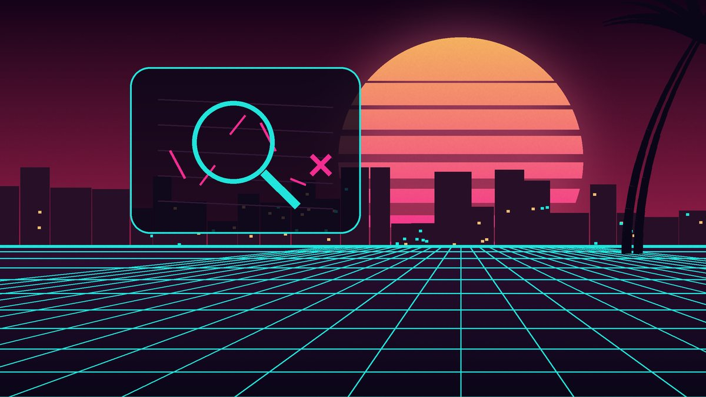

Le apuntó con el francotirador desde un sitio alto y el peatón apareció detrás de él
Un jugador contó que apuntó de noche a un peatón que no se había dado cuenta y que el hombre se volvió invulnerable y se le plantó a la espalda. Nadie sabe si es un fallo o algo puesto a propósito. Lo que sí ha explicado Rockstar es que en GTA 6 la gente de la calle reacciona a las armas como no lo hacía en GTA 5.
Por Redacción Golpe Diario · Publicado el

Qué ha pasado
Lo que se ha visto. GamingBible recoge el caso del usuario de Reddit seepa-man: estaba explorando de noche, apuntó con un rifle de francotirador a un peatón que no se había dado cuenta y el peatón se volvió aparentemente invulnerable y apareció de repente detrás de él. El medio lo deja en el aire y escribe que nadie puede saber si es un easter egg escondido a propósito o simplemente un fallo raro.
La versión que corre por las redes es más gorda. La cuenta de recopilación de Mario Nawfal lo publicó en X contando que el jugador subió a un sitio alto, hizo zoom sobre un hombre que estaba abajo y el hombre se teletransportó delante de él y lo mató. Otra cuenta grande, Daily Loud, añade que lo mató de un solo golpe. Esos detalles no están en la versión que recoge GamingBible, así que lo prudente es quedarse con lo que cuenta el propio jugador: el peatón no se dejó matar y acabó a su espalda.
Lo que sí está confirmado es que la gente de la calle ya no se queda quieta. Rob Nelson, jefe de desarrollo de Rockstar North, lo explicó en una entrevista con TGG que recoge Dexerto: en GTA 5 podías sacar una escopeta de la nada delante de todo el mundo y nadie reaccionaba, y eso, dice, aquí ya no funciona. Sus palabras son que los vecinos son más matizados que antes: si llevas un arma larga a la espalda no debería pasar nada, pero si la llevas en la mano a la gente no le gusta y empieza a apartarse.
Kotaku lo resumió en agosto con otra frase de Nelson: baja por la calle con un rifle y la ciudad tendrá algo que decir. Ese mismo artículo avisaba de que entonces no estaba claro si la cosa acababa en una detención o solo en civiles huyendo. Y GamesRadar+ cuenta que Rockstar dio a los peatones unas 600.000 animaciones y rasgos de personalidad que deciden cómo reaccionan ante ti, así que no todos responden igual.
Dónde está el límite. Que un peatón se dé cuenta de que le estás apuntando es una cosa, y que suba a un tejado en un segundo y te mate es otra muy distinta. Eso no lo ha contado Rockstar ni aparece en ninguna guía: es el vídeo de un jugador y, hasta que alguien lo repita, se queda en eso.
Qué significa para ti
- Si vas a disparar desde lejos, cuenta con que el objetivo puede reaccionar: ya no es un muñeco esperando el disparo.
- Lleva el arma larga a la espalda mientras te mueves por la ciudad. En la mano, según Rob Nelson, la gente se aparta de ti y te delata.
- Si te pasa algo parecido, graba la zona y la hora del juego: sin eso nadie puede repetirlo ni comprobarlo.
- No te creas los vídeos que lo venden como un easter egg oculto. Ni Rockstar ni las guías lo documentan.
Lo tienes también en la guía: Secretos y easter eggs de GTA 6: dónde están y cómo llegar · Trucos y consejos para el modo historia de GTA 6
Contrastado con: GamingBible · Dexerto · Kotaku · GamesRadar+ · X (Mario Nawfal) · X (Daily Loud)
Sigue leyendo
Rockstar mapeó toda la red de suministro de las pandillas de Leonida, aunque solo veas trozos sueltos
Un director de diseño de Rockstar ha contado a IGN que el reparto de droga entre las bandas de GTA 6 está pensado de principio a fin, aunque el juego solo deje ver fragmentos de esa cadena.
El mapa de fans que señala todos los coleccionables de GTA 6 (y por qué conviene usarlo con cuidado)
La comunidad de GTABase ha montado un mapa interactivo con cada coleccionable y punto de interés de Leonida. Es muy útil para el 100 %, pero también enseña cosas que todavía no has vivido en la historia.
El Joker de Florida amenazó con demandar a Rockstar, y ahora está en los créditos de GTA 6
Lawrence Sullivan, el internauta viral por su ficha policial de 2017, llegó a pedir 10 millones de dólares a Rockstar por un plano del tráiler. Hoy aparece acreditado como voz de la población de Leonida, y los mismos créditos nombran también a los empleados que la compañía despidió.